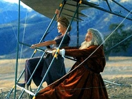
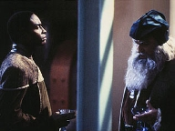
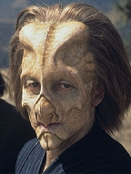
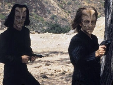
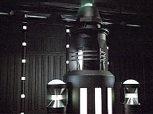

| MANCHETE
DO EPISDIO
Da
Vinci
se aventura no Quadrante Delta
Episdio
anterior | Prximo episdio Sinopse:
Data Estelar: 51386.4.  Enquanto
a Voyager atacada por naves desconhecidas, equipamentos, suprimentos e armas
so desmaterializados de vrios decks. Os aliengenas usam um raio de
transporte de alta energia para localizar itens de valor tecnolgico e
remov-los. A tripulao rastreia os objetos roubados para um planeta que
parece abrigar um centro ativo de comrcio. Quando Janeway e Tuvok descem para
a superfcie, localizam de imediato uma assinatura da Frota Estelar: Leonardo da Vinci,
do programa de holodeck da capit. De alguma forma, o holograma foi levado
junto com o processador dos computadores da nave, baixado no emissor porttil
do Doutor.
Da Vinci os leva para uma sala cheia de itens roubados e
fala de seu "patrono", um "prncipe" que lhe prov com
tudo o que precisa. Na Voyager, Chakotay descobre que um homem chamado Tau vende
armas e tecnologia, as quais confisca de naves que passam pela regio. Acontece
que Tau o patrono de Da Vinci. Ela se finge de compradora e pergunta sobre
computadores. Tau revela que possui o processador da Voyager para vender.
 Aps coletar mapas topogrficos da regio, Tuvok
retorna para a nave, para examinar as informaes. Ele e Seven localizam a
instalao de armazenamento em que o computador mantido, mas um campo de
conteno impede o uso dos transportes. Janeway tem de entrar no local e
iniciar um pulso de energia que produzir um sinal forte o suficiente o
travamento do raio de transporte. Mas Tau escuta as comunicaes entre a
capit e a nave, e aponta uma arma. Da Vinci vem em defesa de sua
"aprendiz" e nocauteia o aliengena. A dupla segue, ento, para a
instalao.
Quando encontram o processador, Janeway executa o plano de
Tuvok. A chegada de guardas armados impede o transporte, o que fora Janeway e
Da Vinci a escapar por conta prpria. Eles entram em um planador projetado pelo
holograma e decolam de um penhasco, enquanto os capangas de Tau atiram. Por fim,
a Voyager desce a uma altitude que permite o transporte da capit e seu mentor,
junto com o planador que salvou suas vidas
Comentrios:
 "Concerning Flight" seguramente um dos
segmentos mais fracos da temporada, no apenas por apresentar uma premissa
pouco interessante, mas por apelar a certos absurdos cientficos e histricos
que deixam o telespectador boquiaberto. Parece que a nica razo para terem
feito o episdio foi trazer de volta a bordo o ator John
Rhys-Davies, notvel no papel de Da Vinci no
excelente "Scorpion".
A histria comea com a ameaa-da-semana (TM), como
colocaria o colega Luiz Castanheira: um bando de aliengenas desconhecidos - e
que nunca mais veremos - atacam a Voyager em uma verdadeira operao de
pirataria. E a nave mais avanada da Frota, que j enfrentou os Borgs,
incapaz de disparar contra os inimigos. Resultado: tecnologia e suprimentos so
roubados. A tripulao rastreia os objetos at um planeta prximo e a
capit em pessoa desce para recuper-los.
 Na superfcie, descobre que o holograma de Leonardo Da
Vinci foi misteriosa e convenientemente baixado de seu programa pessoal do
holodeck para o emissor porttil do Doutor, tambm roubado no ataque. A partir
da, a srie de eventos "conspira" para que a dupla trabalhe em
equipe na recuperao do processador do computador da Voyager. E, sim: o
gnio italiano confunde o planeta aliengena com a "igualmente"
desconhecida Amrica.
Embora a idia tenha sido de aprofundar a relao
entre Janeway e Da Vinci, os roteiristas no foram bem-sucedidos. Em primeiro
lugar, pela redundncia. A essa altura, o f j sabe que nunca mais o
ver, j que Voyager no costuma honrar a tradio dos personagens
recorrentes. Depois, porque os dilogos so totalmente dispensveis. No
h qualquer conceito inspirador, como se esperaria. O pensador de "Scorpion"
tratado aqui como um animador de circo. E at Tuvok fica engraadinho.
Como diria Seven, tudo irrelevante trama maior.
 A bordo da Voyager, reina a incompetncia. Chakotay
no apenas fica sem respostas, como deixa seu interrogado sair com os itens
da Frota que comprou dos piratas! V-se claramente o aliengena deixando a
sala com um rifle phaser e trajando o uniforme da Frota. O comandante,
bastante perspicaz, solta a prola: "a cor fica bem em voc"!
Enfim, embora sejam talentosos,
John Rhys-Davies e Kate Mulgrew, os
personagens centrais da semana, no conseguem salvar a histria. O desfecho
ridculo encerra "com chave de ouro" a trama perdida. De alguma
forma, Da Vinci teve tempo de corrigir os erros no projeto e construir o
veculo voador, posicionando-o precisamente no local de onde, no futuro,
Janeway precisaria fugir. Em Voyager, parece, os acasos acontecem com
maior freqncia...
Citaes:
Chakotay - "They removed a lot.
Five tricorders, three phaser rifles, a couple of photon torpedo casings, two
anti-matter injectors, a month's supply of emergency rations."
("Eles removeram bastante. Cinco tricorders, trs rifles phaser, um par de
estojos de torpedo fotnico, dois injetores de anti-matria, um ms de
suprimentos de raes de emergncia...")
Tom - "No great loss there."
("Nenhuma perda grande a.") Da
Vinci - "Curious ears..."
("Que orelhas curiosas...")
Janeway - "My travelling companion... Tuvok."
("Meu companheiro de viagem... Tuvok.")
Da Vinci - "What the old philosophers say is true: monstrous and
wonderful are the peoples of undiscovered lands."
("O que os filsofos dizem verdade: monstruosos e maravilhosos so os
povos das terras desconhecidas.") Janeway
- "Try to keep our hologram occupied."
("Tente manter nosso holograma ocupado.")
Tuvok - "But, Captain..."
("Mas, capit....")
Janeway - "Make small talk."
("Jogue conversa fora.")
Tuvok - "Vulcans do not make small talk."
("Vulcanos no jogam conversa fora.")
Janeway - "Improvise."
("Improvise.") Tuvok -
"You are most intriguing."
("O senhor bastante intrigante.")
Da Vinci - "Ah, gratsi. And you, signore Tuvok,
where are you from?"
("Ah, gratsi. E voc, signore Tuvok, de onde vem?")
Tuvok - "Scandinavia."
("Escandinvia.") Trivia:
 Aqui h uma referncia ao episdio da Srie
Clssica Requiem for Methuselah, quando Janeway menciona que
o capito Kirk disse que havia conhecido Leonardo da Vinci.
Aqui h uma referncia ao episdio da Srie
Clssica Requiem for Methuselah, quando Janeway menciona que
o capito Kirk disse que havia conhecido Leonardo da Vinci.
Jess Salvador Trevio dirigiu cinco episdios
em toda a srie.
John Rhys-Davies fez o papel de Leonardo da Vinci
em dois segmentos. Alm deste episdio, o outro foi Scorpion,
ao final da terceira temporada. Ficha
tcnica: Direo de
Jesus Salvador Trevino
Escrito por Jimmy Diggs e Joe Menosky
Exibido em
26/11/1997
Produo: 079 Elenco: Kate
Mulgrew como Kathryn Janeway
Robert Beltran como
Chakotay
Roxann Biggs-Dawson como B'Elanna Torres
Robert
Duncan McNeill como Tom Paris
Ethan Phillips como
Neelix
Robert Picardo como Doutor
Tim Russ
como Tuvok
Jeri Ryan como Seven of Nine
Garrett Wang como Harry Kim Elenco
convidado:
John Rhys-Davies como Leonardo da Vinci
John Vargas como Tau
Don Pugsley como Visitante aliengena
Doug Spearman como Comprador
aliengena
Episdio
anterior | Prximo episdio
|